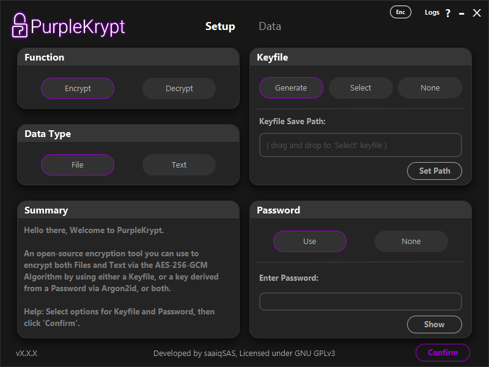

2. Generating Keys
by: saaiqSAS
Last Updated: 9/2/2026
In this section, we'll cover the different ways you can generate and use keys in PurpleKrypt. As shown in (Fig.2.1), the right half of
the Setup tab is responsible for configuring keys.

Fig.2.1
PurpleKrypt supports three different key configurations:
1. Keyfile encrypted with password – Keyfile: Generate, Password: Use
2. Unencrypted keyfile – Keyfile: Generate, Password: None
3. Password only – Keyfile: None, Password: Use
The Select option (or drag-and-drop a keyfile) should be used if you want to work with an existing keyfile.
This keyfile may be encrypted or unencrypted, depending on whether a password was used when it was generated. Note that the application
has no way of determining whether a keyfile is encrypted or not; therefore, it is your responsibility to remember.
Keyfiles selected using the Select option are not limited to decryption and can also be used to encrypt additional data.
An encrypted keyfile can also be used without providing the password. In this case, the key extracted into memory will differ from the key
generated when the correct password is supplied. As a result, data encrypted with a password requires the password to be decrypted correctly,
while data encrypted without a password must be decrypted without one. Note that this behavior does not apply to unencrypted keyfiles.
In other words, you cannot use a password with an unencrypted keyfile.
(This behavior was originally a bug but is now treated as a "feature". If it is later proven to be a security risk, this "feature" will be removed.)
Once you have selected your desired options and provided any required input in the Setup tab, click the
Confirm button. This confirms the selected keyfile and password options and saves your choices to memory
(not the key itself). If you later change any options or inputs in the Keyfile or Password
boxes, you must click the Confirm button again for the changes to take effect. The Function and
Data Type options, however, are updated immediately when selected and are not tied to the Confirm button.
After clicking the Confirm button, you will automatically be taken to the Data tab. If desired,
you can return to the Setup tab and review the Summary box for key usage confirmation details.
On the Data tab, once you have provided your input data, click the Process button. The actual key
is loaded into memory only after clicking Process. At that point, a key icon will appear in the top-left bar,
indicating that the key is currently stored in memory.